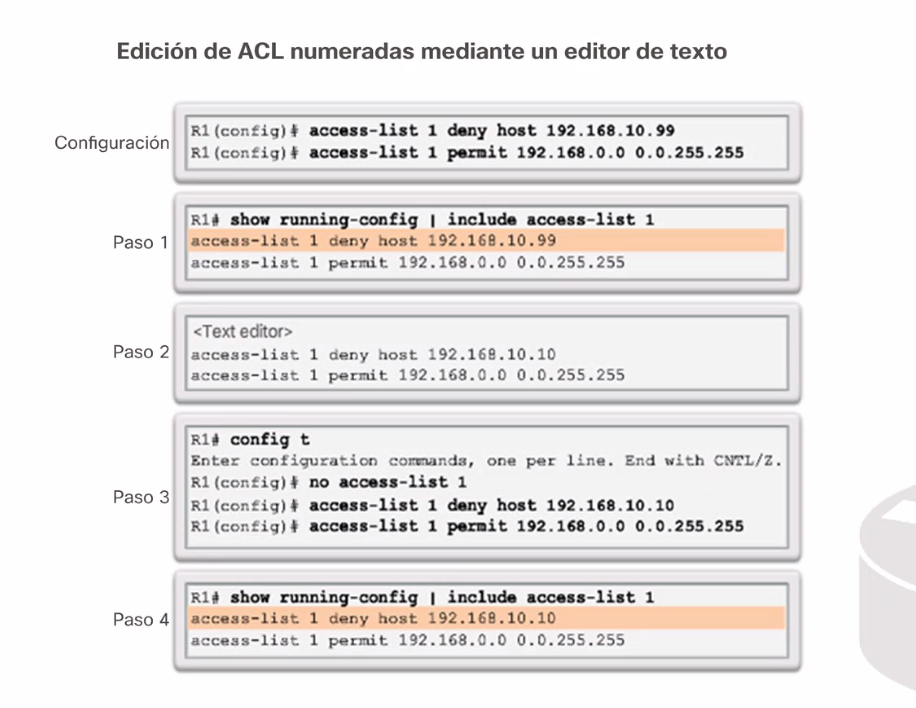

Borrar

Si solo quieres borrar una red (1o por ejemplo) con eliminarla de la lista puedes ponerla.

Insertar una regla en medio: Las sequencias de 10 en 10 permiten meter reglas intermedias. Literal puedes meter 10 nuevas reglas enttrela regla con id 10 y la de id 20.
Mete siempre la de en medio por si tienes que meter mas nuevamente.
IMportante:

IMPORTANTE: pOR LAS ESTADISTICAS (NUMERO DE VECES QUE SE CUMPLE UNA REGLA) PUEDES DETERMONAR QUE INTERFACES Y PUERTOS SON LOS MAS ATACADOS.


VTY 0-15
todas las seciones conrurrentes en e mismo ruteados.